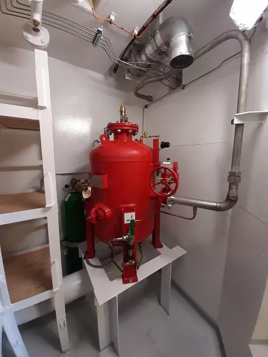

Gas sensors and detection systems and other products
Effective protection of the facility against fire is a priority as it guarantees the
safety of people and property. It is especially important in the case of vessels that have
significantly limited evacuation possibilities. Currently, such facilities are protected by
innovative gas detection systems, sampling and extinguishing systems, as well as the latest
generation of flame detectors and Ex alarms. Thanks to modern technological solutions, they are
extremely sensitive and precise. Therefore, they guarantee effective protection in environments
with a very high risk of both self-ignition and explosion.
Our offer includes a wide range of automated alarm, fire and monitoring systems. We
design, implement and service gas detection systems and fire extinguishing systems in land
buildings and in the shipbuilding industry. We equip them with the most modern solutions, such
as flame detectors or Ex alarms. When creating projects, we work closely with Autronica, Kidde
and E2S. We implement innovative technologies all over the world. We also invite you to
familiarize yourself with the list of our projects.

Ex and E2S signaling devices
We also offer optical and acoustic signaling devices from E2S. The devices are
equipped with special, fireproof and intrinsically safe housings. Therefore, they can be used in
areas with mixtures of combustible gases and dusts. Products from this series are ready for
immediate installation and operation in Ex zones at risk of explosion. We sell both stand-alone
Ex signaling devices and use them to build alarm automation systems.
Autronica Autrosafe IFG - integrated detection fire and gas detection system
AutroSafe IFG is the leading interactive-addressable system for integrated fire and
gas
detection, developed in close collaboration with the petrochemical, oil and gas industry. It
holds the highest standards for safety with SIL2 approval and EN-54 compliance. AutroSafe IFG
incorporates numerous cost saving features including networking and loop distribution,
installation and maintenance tools and SelfVerify, the self-testing mechanism. With dynamic
filtering, AutroSafe IFG, ensures reliable detection whilst reducing unwanted alarms and costs
from process shutdowns.
Approved according to Safety Integrity Level 2 (SIL2).
Autronica Fire and Security has developed the world’s first interactive-addressable
system for
integrated fire and gas detection: AutroSafe Integrated Fire and Gas Detection System (IFG), the
only integrated fire and gas detection system that is approved according to IEC 61508 Safety
Integrity Level 2 (SIL2).
AutroSafe IFG has been developed in close collaboration with the petrochemical, oil
and gas
industry. AutroSafe IFG is designed to comply with present and future standards, including EN
54, and is approved by many international standards organizations.
Autronica System AutroSafe 4 - fire detection system
Main contents of AutroSafe System:
SelfVerify function for automatic testing of detectors
Automatic addressing of detectors
AutroFieldBus
Accommodates up to a maximum of 12 modules, of wchich maximum 6 can be loop
driver modules
User-friendly display and operator controls
Monitoring and Security on the Detection Loop
The Multisensor
Module Capacity in the Fire Alarm Control Panel and Controller
All system units are assigned to zones during configuration. This allows
hierarchical control
from the detection to the activation of alarms. AutroSafe consists of the following three zones:
Detection Zone,
Alarm Zone,
Operation Zone.
Self-Verifying Function
AutroSafe features the unique Self-Verifying Function which makes the system capable
of
inspecting and verifying itself every day. Every day the system completely checks all detectors,
interfaces, connections and cables – from the detector chamber through to the alarm output. In
the event of any irregularities, the display on the operating panel will pinpoint the source of
a the problem, clearly and concisely.
Up to Until now, fire alarm systems have depended on upon careful manual
inspections, involving a
number of problems. For example, the detectors may be out of reach, the service engineer may not
have access to particular areas, the detectors may not have been installed according to drawings
etc. Even a manual test is not 100% reliable.
E2S offers intrinsically safe, explosion and flameproof and non-sparking alarm horn
sounders,
PA/GA and mass notification systems and manual call points for use in both gas and dust
atmospheres.
Multiple global product approvals including, ATEX, IECEx, UL, cULs, FM, Ex EAC,
ANZEx and INMETRO
ensure universal compliance.
Two lamps may be powered from a single IIC
intrinsically safe Zener
barrier or galvanic isolator and up to four lamps from a IIB device
Red, amber, green, blue and white comply with the
indicator light
colour requirements specified in IEC2 04-1, allowing all plant
conditions to be annunciated
Mounting is via a single industry standard 2 2 .5mm
diameter hole
Unit can be mounted using external lugs or internal
BESA compatible
fixing positions
Duplicate cable terminations (in & out for
daisy-chain
installations)
Tropicalisation available on request
Available with custom tone configurations and
frequencies
‘Programmable’ version available: 45 alarm tones, 4
remotely
selectable stages, any tone can be assigned to any stage, aser
configurable continuous frequency tone
Novec™ 1230 instantly vaporizes upon discharge, totally flooding protected spaces
and absorbing
heat better than water. The Novec™ 1230 system suppresses a fire before it can start by
detecting it at invisible levels. And once the danger has passed, Novec™ 1230 quickly evaporates
without harming any valuable assets. Novec™ 1230 suppression systems represent the most
effective fire protection on the market today.
The Kidde ECS Series (Engineered Central Storage) is an engineered clean agent
suppression system
designed to protect mission critical facilities and high valued assets. Excellent protection for
small, medium and large-sized applications.
Advantages:
Clean agent protection for small, medium and large applications
Faster reacting than water-based systems (seconds as opposed to minutes)
No water, so there is little to no damage to the equipment or the facility
Flexible design capabilities for small or large floor plans
Typical Applications:
Kidde ECS Series - Clean Agent Systems are recommended for fire protection of
facilities where
one or more of the following conditions are involved:
Value of the facilities contents (such as a museum) or the importance of the
facility to a
company’s business continuity (such as a data center) requires a fire suppression system
that can react in seconds
Water sprinkler systems are not available, or if present, may damage the
contents of the
facility to be protected or pose an electrical safety problem for fire fighters
Deluge system, is a system employing open nozzles attached to a piping system
connected to a
water supply through a valve that is opened by manual operation. When this valve is opened,
water flows into the piping system and discharges from all nozzles attached thereto. Upon
activation of the system, either from the operating panel at the bridge or in the ECR or by a
manual release button located nearby the protected area the deluge pump(s) will start and
section valve will open feeding the car deck deluge system with water.
Photos:
Dry chemical powder system
Autronica Dry Chemical Powder System is a fire extinguishing system especially
designed for
bunkering stations. The system is able to break the chemical reactions during the combustion
process. This makes Autronica Dry Chemical Powder System highly effective by extinguishing the
flames almost immediately.
The system is non-toxic and harmless to people and the environment. The powder is
composed by
very small particles (potassium bicarbonate) with added particulate material supplemented by
special treatment to provide resistance to packing, caking and the proper flow capabilities.
The powder is stored in a tank at atmospheric pressure. Upon activation, the system
is
pressurized by nitrogen through a pressure regulator in order to give the best control of the
discharge and ensure a steady discharge rate through the whole discharge period. The powder is
then discharged through a distribution system onto or into the protected item/area.
Photos:
OMICRON - gas systems
Gas sampling system
OMICRON GAS SYSTEM OGS 3.1
OMICRON GAS SYSTEM OGS 3.1 is the latest revision of the 3rd generation, fully
computerised
sampling system for gas detection developed by the company.
OGS 3.1 is intended for permanent installation. Different models and options cover
most
applications. It is especially suitable for monitoring void spaces and tanks that normally
should be gas free. It can be delivered with up to 48 sampling points and monitor up to three
different gas types simultaneously. The sample points have easy individual adjustments of gas
alarm levels, sample and purge times.
OGS 3.1 is based on a scanning method. This means that the different sampling points
are being
connected to the gas sensor(s) in a cyclic sequence. The system can be equipped with all
types/technologies of gas sensors with 4-20mA outputs. Infrared gas sensor is standard for
detection of hydrocarbon gases.
OGS 3.1 can be delivered in two basic versions, as a Split version, or alternatively
as a
Combined version. In a Split version all mechanical and pneumatic components are mounted in a
separate cabinet, the Detector Cabinet. It is electrically connected to the Display Cabinet,
which includes power control functions and the Operator Panel.
A Combined version has all components in one cabinet with the Operator Panel mounted
in the door.
In addition this requires an external Power Control and Interface Cabinet to ensure a complete
power shut-off to the Detector Cabinet if a gas leakage inside that cabinet has been detected.
The Split version is preferred and also best suited if the Operator Panel is to be
mounted in an
area with personnel present, as a separate Display Cabinet does not produce any noise.
OMICRON GAS ALARM SYSTEM - OGS 2.1 is a micro controller based gas alarm system, built
for detection
of potential toxic or explosive gases in pump room or other locations. The most common gases to
detect are hydrocarbon gases in LEL concentration, oxygen, and hydrogen-sulphide.
OGS 2.1 is the model name. The next figures in indicate the composition of sensors in
the system. Ex.
OGS 2.1 / 2-2-1 indicates 2xHC, 2xH2S and 1xO2 sensors.
OGS 2.1 consists of one cabinet including all electronics, terminals for sensor
connections and the
operator panel.
Any type of gas sensor can be connected to the system, provided that the sensor output is 4-20mA or
0-10V, and the sensor fulfil possible Ex-proof requirements for the intended operating area.
Sensor loops are continuously monitored for under and over current. Loop failures and
other system
failures are indicated on designated alarm LED’s. Each channel has adjustable alarm set points with
designated alarm LED’s for each set point. Each channel has further a digital display showing the
actual gas concentration.
The system is fitted with potential free change-over relay contacts for power failure,
common gas
alarms (one for each gas type), and for system failures.
Niniejsza Polityka Prywatności określa sposób pozyskiwania, przetwarzania oraz
zabezpieczania danych osobowych w rozumieniu ustawy o ochronie danych osobowych z dnia 29 sierpnia 1997
roku (Dz.U. Nr 133, poz. 883 z póź. zm.) oraz ustawą o świadczeniu usług drogą elektroniczną z dnia 18
lipca 2002 r. (Dz.U. Nr 144, poz. 1204 z póź. zm.)
Właścicielem strony internetowej sealab.pl oraz administratorem danych osobowych jest
Sealab Sp. z o. o., z siedzibą w Gdańsku 80-299, ul. Wodnika 54.
II Dane osobowe
Serwis zbiera informacje podane dobrowolnie przez użytkownika.
Dane osobowe są pozyskiwane podczas wypełniania formularza newsletter.
Dane osobowe są wykorzystywane wyłącznie w celu wysyłania newslettera oraz o ile wyraził na
to zgodę.
Zawartość strony internetowej można przeglądać bez podawania jakichkolwiek danych
osobowych.
Każda osoba, która udostępniła swoje dane osobowe ma prawo do dostępu do ich treści oraz
możliwość ich poprawiania, uaktualniania, uzupełniania, jak i również żądania zaprzestania przetwarzania
danych osobowych oraz wniesienia sprzeciwu wobec przetwarzania danych osobowych. Wymienione czynności
można dokonać poprzez wysłanie stosownego oświadczenia na adres email: m.barski@sealab.com.pl
Pozyskane przez administratora dane osobowe są przechowywane, przetwarzane i chronione
zgodnie z obowiązującymi przepisami prawa. Zbiór danych osobowych został zgłoszony do Urzędu Ochrony
Danych Osobowych (uodo.gov.pl).
Administrator chroni zgromadzone dane osobowe korzystając z następujących środków:
– szyfrowanie danych służących do zapisu do newslettera
– zabezpieczenie zbioru danych przed nieuprawnionym dostępem
III Informacja o plikach cookies.
Serwis korzysta z plików cookies.
Pliki cookies (tzw. „ciasteczka”) stanowią dane informatyczne, w szczególności pliki
tekstowe, które przechowywane są w urządzeniu końcowym Użytkownika Serwisu i przeznaczone są do
korzystania ze stron internetowych Serwisu. Cookies zazwyczaj zawierają nazwę strony internetowej, z
której pochodzą, czas przechowywania ich na urządzeniu końcowym oraz unikalny numer.
Podmiotem zamieszczającym na urządzeniu końcowym Użytkownika Serwisu pliki cookies oraz
uzyskującym do nich dostęp jest operator Serwisu.
Pliki cookies wykorzystywane są w następujących celach:
• tworzenia statystyk, które pomagają zrozumieć, w jaki sposób Użytkownicy Serwisu korzystają ze stron
internetowych, co umożliwia ulepszanie ich struktury i zawartości;
W ramach Serwisu stosowane są dwa zasadnicze rodzaje plików cookies: „sesyjne” (session
cookies) oraz „stałe” (persistent cookies). Cookies „sesyjne” są plikami tymczasowymi, które
przechowywane są w urządzeniu końcowym Użytkownika do czasu wylogowania, opuszczenia strony internetowej
lub wyłączenia oprogramowania (przeglądarki internetowej). „Stałe” pliki cookies przechowywane są w
urządzeniu końcowym Użytkownika przez czas określony w parametrach plików cookies lub do czasu ich
usunięcia przez Użytkownika.
Oprogramowanie do przeglądania stron internetowych (przeglądarka internetowa) zazwyczaj
domyślnie dopuszcza przechowywanie plików cookies w urządzeniu końcowym Użytkownika. Użytkownicy Serwisu
mogą dokonać zmiany ustawień w tym zakresie. Przeglądarka internetowa umożliwia usunięcie plików
cookies. Możliwe jest także automatyczne blokowanie plików cookies Szczegółowe informacje na ten temat
zawiera pomoc lub dokumentacja przeglądarki internetowej.
Ograniczenia stosowania plików cookies mogą wpłynąć na niektóre funkcjonalności dostępne na
stronach internetowych Serwisu.
Pliki cookies zamieszczane w urządzeniu końcowym Użytkownika Serwisu i wykorzystywane mogą
być również przez współpracujących z operatorem Serwisu reklamodawców oraz partnerów.
Zalecamy przeczytanie polityki ochrony prywatności tych firm, aby poznać zasady korzystania
z plików cookies wykorzystywane w statystykach: Polityka ochrony prywatności Google Analytics.
Pliki cookies mogą być wykorzystane przez sieci reklamowe, w szczególności sieć Google, do
wyświetlenia reklam dopasowanych do sposobu, w jaki użytkownik korzysta z Serwisu. W tym celu mogą
zachować informację o ścieżce nawigacji użytkownika lub czasie pozostawania na danej stronie.
W zakresie informacji o preferencjach użytkownika gromadzonych przez sieć reklamową Google
użytkownik może przeglądać i edytować informacje wynikające z plików cookies przy pomocy narzędzia:
https://www.google.com/ads/preferences/
IV Zarządzanie plikami cookies – jak w praktyce wyrażać i cofać zgodę?
Jeśli użytkownik nie chce otrzymywać plików cookies, może zmienić ustawienia przeglądarki.
Zastrzegamy, że wyłączenie obsługi plików cookies niezbędnych dla procesów uwierzytelniania,
bezpieczeństwa, utrzymania preferencji użytkownika może utrudnić, a w skrajnych przypadkach może
uniemożliwić korzystanie ze stron www.
V Udostępnienie danych.
Dane podlegają udostępnieniu podmiotom zewnętrznym wyłącznie w granicach prawnie
dozwolonych.
Operator może mieć obowiązek udzielania informacji zebranych przez Serwis upoważnionym
organom na podstawie zgodnych z prawem żądań w zakresie wynikającym z żądania.
VI Postanowienia końcowe
Administrator ma prawo do zmian w niniejszej Polityce Prywatności. Osoby udostępniające
swoje dane osobowe obowiązuje aktualnie obowiązująca wersja Polityki Prywatności, dostępna na stronie
http://sealab.pl
W sprawach nieuregulowanych niniejszą Polityką Prywatności stosuje się obowiązujące
przepisy prawa polskiego.
This website uses cookies. Cookies are small text files that can be used by
websites to make a user's experience more efficient.
Learn more about who we are, how you can contact us and how we process personal data in our Privacy Policy.